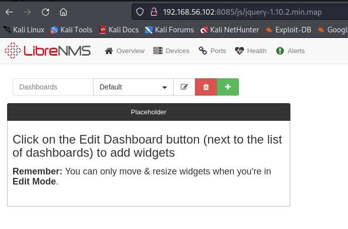

Symphonos2: Walkthrough
Summary
Symphonos2 is a Medium challenge rated machine were attackers apply techniques as ...
- FTP and SMB enumeration
- ProFTPD 1.3.5 cpfr/cpto functions explotation (CVE-2015-3306)
- Port-forwarding to expose internal ports
- LibreNMS privelege escalation
- SUID privilege escalation (root)
Vulnhub link: https://www.vulnhub.com/entry/symfonos-2,331/
Network config
Both machines are deployed in VirtualBox, being connected by a 'Host-only' network configuration.
| Machine | IP | Description |
|---|---|---|
| kali | 192.168.56.101/24 | The attacker machine |
| symphonos2 | 192.168.56.102/24 | Target machine to be pwned |
Let's hack!
Enumeration
Enumerating the system is the core of a penetration test, in this case, it's gonna help us to identify technologies within the server, and locate possible entry points to exploit.
We can start by scaning all machine's ports with nmap, finding the following open ports: 21,22,80,139,445
Next step is to gather some port versions.
There is an smb port, with anonymous access. A good aproach is to use smbmap, to gather more information about the workspaces, finding an anonymous workspace with read access.
Inside of the workspace there is a log file with information of interest, as a path to shadow's file backup, samba's configuration and the path to the current anonymous share, located under the aeolus user.
As a summary of information gathered in each service:
- Not the latest version (1.3.9)
- There is an exploit for this version, that allows the use of 'cpfr' and 'cpto' commands, being able to copy files (CVE-2015-3306). Often used to gain RCE via Webshell.
- Anonymous login with email
- Anonymous access to 'anonymous' share (read-only)
- Log file with path locations
- Path to this share '/home/aeolus/share'
Explotation
Trying to gain an RCE via ftp-exploit
Knowing that ftp is vulnerable to CVE-2015-3306, a good approach is trying to gain RCE via a Webshell, uploading a php payload.
We will review the next exploit: https://github.com/t0kx/exploit-CVE-2015-3306
The exploit connects to the machine via fpt, as an anonymous user. Next, it uses the fuctions 'site cpfr' y 'site cpto' to copy a php payload to web server's path.
To replicate this, we try to use those commands to create a php file.
As it is shown, it is successful. The problem comes when you try to copy a file to '/var/www/html', because the user doesn't have enough privileges to do so. This ruins the possibility of gaining an RCE, but still we can move files around within the system, allowing us to try different approaches
Retrieving sensitive files (shadow and passwd)
SMB server allows us to get all files form anonymous workspace, and FTP server allows us to copy files to another directories. As we know the location of the anon workspace, could be wise to check if it's posible to copy sensible files to this location, downloading them afterwards.
Great targets are:
| File | Description |
|---|---|
| '/var/backups/shadow.bak' | Contains password hashes |
| '/etc/passwd' | Contains users and more info about them. |
| '/usr/local/etc/etc/proftpd.conf' | FTP server's configuration file. |
| '/etc/samba/smb.conf' | SMB configuration file |
Example of '/etc/passwd' file retrieval:

We download the rest of the files
Inside of 'passwd', multiple users are found (root, aeolus and cronus)
Having the users and their password hashes, it's possible to try cracking their passwords. For that, we can use 'john' (a tool to find weak passwords of users). It requieres a file that we can build with 'unshadow'
After creating the file, we run 'john', cracking the password of 'aeolus' user.
We try the new obtained credentials on SSH server, gaining access to the machine.

Port Forwarding
After gaining access to the system, we need to find a way of escalate our privileges (root or another user). In this case, we tried some techniques as checking crontab files, files executed with sudo privileges and searching files with sensitive information. None of them seemed useful, until we checked machine internal ports.

We also check ports' versions.
As we know, we don't have access from outside the machine.
One way of earning access is via Port Forwarding. In this case, we can use 'socat' to open 8085 port and redirect all trafic to the HTTP internal server (8080)
socat TCP-LISTEN:8085,fork,reuseaddr tcp:127.0.0.1:8080
Privilege Escalation (I)
The first thing that catches our attention is 'LibreNMS', but what is it? LibreNMS is a network monitoring system, that allows configuration of the network via web interface.
We try aeolus credentials, gaining access to the service.
SQL-Injection? Meh, not useful
Exploring the web, we found a search-bar. Testing it against SQLi simple payloads, we discover a way of triggering SQL errors.
After retrieving the databases, tables, columns and a lot of data, we came into the realization that this path leads to nowhere
LibreNMS exploit - RCE
Checking for LibreNMS exploits, we encounter 3 different exploits with metaexploit. In this case, we will use 'addhost_cmd_inject', as we have the ability to use the addhosts functionality (Discovered during the enumeration of the web page).
The exploit demands some options to be setted
| OPTION | Description |
|---|---|
| PASSWORD | LibreNMS user's pass |
| RHOST | Target's machine IP |
| RPORT | Machine's port where LibreNMS allocated |
| USERNAME | LibreNMS user |
| LHOST | Attacker's machine IP (to stablish a reverse shell) |

We set the options and exploit the machine.
Reverse shell connection is stablished as 'cronus' user.
(Optional) To upgrade the terminal to TTY, we decide to run another reverse shell outside of metaexploit, using 'bash -c' to start the reverse shell, and netcat on the kali machine, listening on 1234 port.
After dealing with terminal's troubles (thanks to python), we stablish a full TTY terminal.
Privilege Escalation (II)
First thing to try, is checking binaries allowed to be executed with 'sudo'. In fact, there is 'mysql' available to use.
Checking in GTFobins, we discover that we can escalate privileges via 'mysql'
https://gtfobins.github.io/gtfobins/mysql/
WE ARE ROOT!
And now, we can claim our deserved price :D